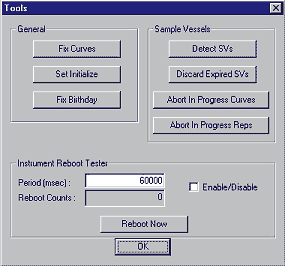
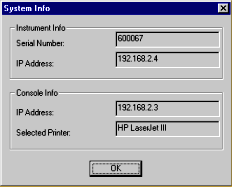
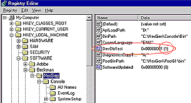
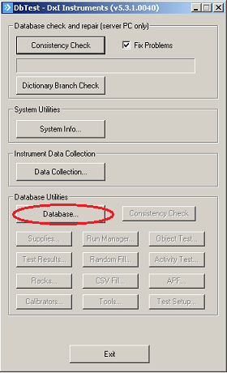

Checks and corrects inconsistencies in the DxI database.
Tools (located in the Database Utilities section at the bottom of the DbTest Window)
Caution: Use of any Database Utilities feature other than Tools can damage the database.
Select the
Tools button at the bottom center of the DbTest window.
Select a button in the Tools window .

Note: In older versions of software if the
Fix Curves button is selected when the UI is present, then DbTest exits with an error. If the error occurs, then exit the UI and the poet server and reopen the DbTest program.
Abort In Progress Reps
Abort In Progress Curves
Discard Expired SVs
Detect SVs
Fix Curves
System Info
Select the
System Info button in the DbTest window.

Displays the Serial Number, IP address, and printer information
Data Collection
Select the
Data Collection button in the DbTest window.
Under Date/Time, select a Start date and time and an End date and time for the data to be collected.
Select
Download to save the data to the indicated file location.
Note:
If there is no Instrument shown in the Choose area, then select the
Add button, enter the Console IP Address (ie. 192.168.2.3), and select
OK.
Select the
Browse to select a new file name or an alternate location for storing the data files.
If the system ID does not match the instrument serial number, aGetNamedAU error occurs when selecting
Download. Temporarily change the system ID to match the instrument serial number in the System Setup window.
The Data Collection utility provides the same information as the Diagnostic Copy to Disk, but can be performed while the system is running and the user interface is active.
Open the Database Utilities function.
For Windows XP console PC with DxI Software 5.2 and below or Access2 Software 3.4.2 and below:
On the console PC, select
Start > Programs > NexGen or NexStep > DbTest.
In the
DbTest
window, select
Database.
Figure 113: DxI DbTest
Figure 114: Access2 DbTest
If the
Database icon is not active, then use these steps to enable the
DevDbTest option in the registry:
Exit
DbTest.
Select
Start
> Run, and then type in
Regedit.
Navigate to
HKEY_LOCAL_MACHINE\SOFTWARE\BECKMAN\NexStep.
Right-click on
DevDbTest, select
Edit, and then change the number 0 to 1.
Open the
DbTest application.

Select
OK to the
Open Poet Database pop-up.
For Windows 8 Min PC with DxI Software 5.3.1 and above or Access2 Software 3.4.3 and above :
Note: DxI Software 5.3.1 and Access2 Software 3.4.3 are compatible with Windows XP console PC. If either software was installed on the Windows XP console PC, then follow the Windows XP section to launch DbTest application and enable the Database tools.
Press
Windows key, select DbTest UD icon or type
DbTest
and open the program.
In the
DbTest
window, select
Database.
Figure 115: DxI DbTest

Figure 116: Access2 DbTest
If the
Database icon is not active, then use these steps to enable the
DevDbTest option in the registry:
Exit
DbTest.
Press
Windows
key, type
regedit, and open the Regedit program.
Navigate to
HKEY_LOCAL_MACHINE\SOFTWARE\BECKMAN\NexStep.
Right-click on
DevDbTest, select
Edit, and then change the number 0 to
1.